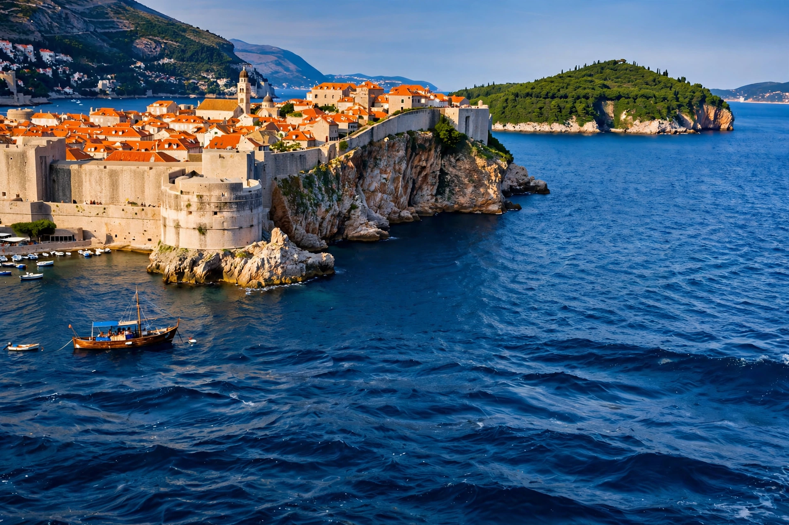

[Image placeholder: The city walls of Dubrovnik above the Adriatic]| Country | Croatia |
|---|---|
| Population | About 42,000 |
| Former state | Republic of Ragusa (1358–1808) |
| Old Town | UNESCO World Heritage Site since 1979 |
**Dubrovnik** is a city on the Adriatic Sea in the Dalmatia region of southern Croatia. From 1358 until 1808 it was the capital of the Republic of Ragusa, a small but wealthy maritime republic that rivalled Venice through diplomacy and trade; in its Croatian name and history it embodies Croatia's Mediterranean heritage.
Dubrovnik's perfectly preserved medieval walls enclose marble-paved streets (the Stradun), the Rector's Palace, Sponza Palace and Franciscan and Dominican monasteries. Shelled by Yugoslav forces during the siege of 1991–92, the city was restored and became one of Europe's most visited — and overtouristed — destinations, further boosted as a filming location for King's Landing in Game of Thrones. George Bernard Shaw called it 'paradise on Earth'; Lord Byron, 'the pearl of the Adriatic'.
Founded by Roman refugees from destroyed Epidaurum (Cavtat) in the seventh century, Ragusa stayed Byzantine-facing while trading with all sides. It abolished slavery in 1416, among the first in Europe, and its diplomacy (the 'Ragusan school') kept it independent between Venice, Hungary and the Ottomans until Napoleon dissolved the republic in 1808.